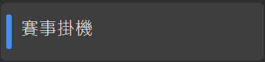
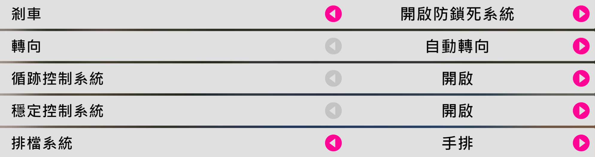
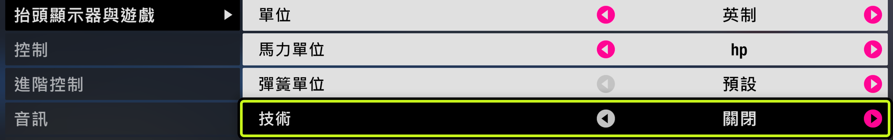
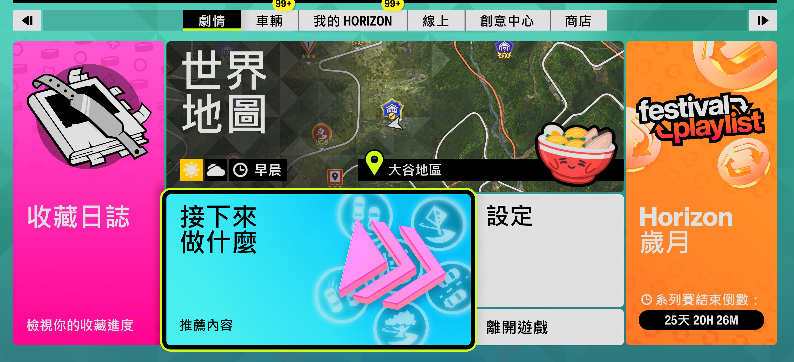

第二部分 — 自動掛機刷技術點
自動掛機刷技術點
1
切換到「賽事掛機」功能
點選側邊欄的「🏁 賽事掛機」功能。樣本已內建，無需擷取。

點選側邊欄的「賽事掛機」。
2
準備車輛、難度與 HUD 設定
使用全滿升級且維持原廠烤漆的 Subaru Impreza 22B-STI。進入遊戲難度設定，將轉向設為自動轉向、循跡控制系統設為開啟、穩定控制系統設為開啟。排檔系統請依 EventLab 地圖要求選擇手排或自排，不是固定使用自排。
接著進入設定 → 抬頭顯示器與遊戲，將技術設為關閉。

難度設定範例；排檔系統必須配合所使用的 EventLab 地圖。

在「抬頭顯示器與遊戲」中將「技術」設為關閉。
3
進入比賽起點（或停在主選單）
你可以停在起跑畫面（看到「開始比賽」選單），或直接停在主選單——FAFE 會自動經由創意中心 → EventLab 前往你上次遊玩的賽事並進入起跑畫面。建議使用藍圖分享碼 362 177 064（或任何按住 W 就能跑完的圖）。FAFE 會偵測你目前在哪個畫面並接手，比賽未開始前停住即可。

主選單範例：停在這類暫停選單畫面，FAFE 會自動前往上次遊玩的 EventLab 賽事。

起跑畫面範例：讓「開始賽事」保持選取，尚未正式開始比賽。
4
按下開始
在 FAFE 點選「▶ 開始」或按 F9，接著會倒數 3 秒。啟用背景模式時，FAFE 會直接控制遊戲視窗，不需要切換回 FH6。
5
放著讓它跑
工具自動偵測比賽開始，按住 W 全程，偵測終點後自動重新開始，無限循環。
6
停止
隨時按 F9 或點「■ 停止」即可立即中止——比賽進行中（按住 W 時）也能正常停止。